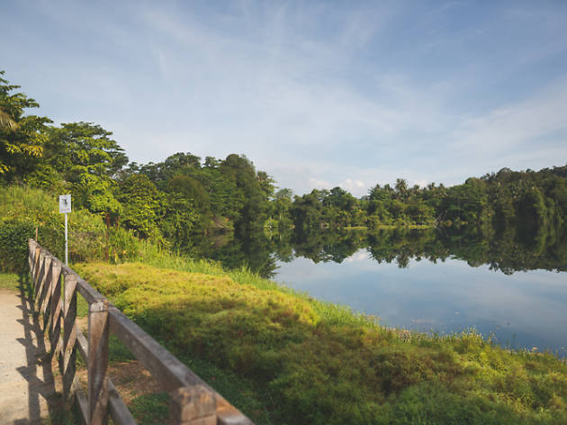
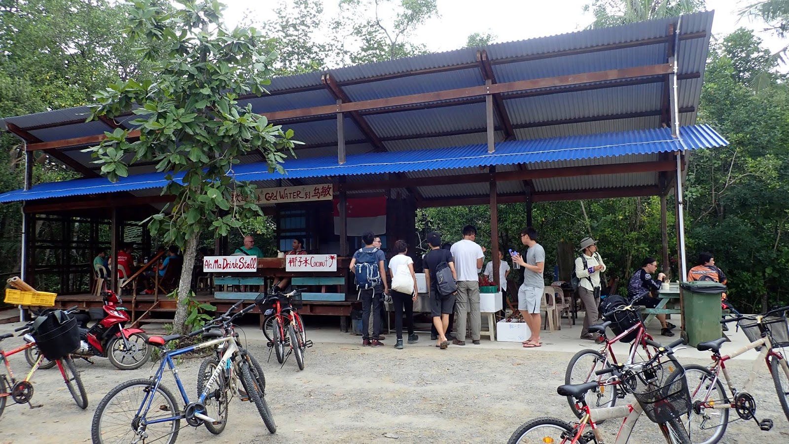
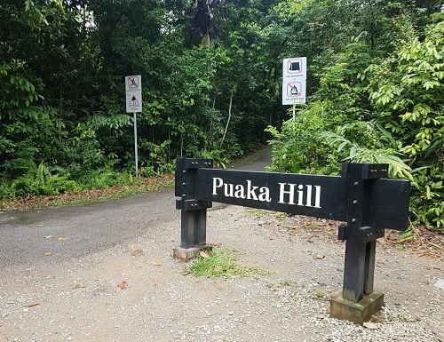
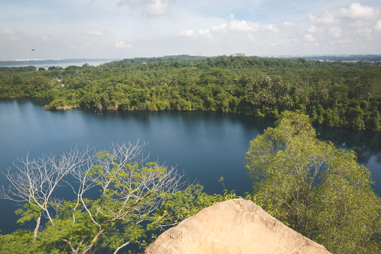

THINGS TO DO|MAP OF PULAU UBIN|HOW TO GET THERE
An island off the coast of Singapore!
Find out more about what lurks this beautiful island of Pulau Ubin!
For a glimpse of Pulau Ubin, click here
SENSORY TRAIL|TECK SENG'S PLACE|PEKAN QUARRY|AH MA DRINK STALL|PUAKA HILL
Ready to get your hiking shoes on as you embark the Sensory Trail!
Enjoy a wide variety of Flora and Fauna , offering you phenomenal view of Mother Nature!
The sky blue Chinese home housed 3 generations of the Chew family when they ran the Teck Seng Provision Shop on the island back in the day.
Come by when there is, quite literally, an open house, on the 2nd & 4th weekend of the month, complete with tours held by NParks
The home has been kept as it once was in the past, so entering it will be like taking a glimpse back in time.
Ubin is home to plenty of granite quarries which were excavated back in the 1970s to supply materials for roads on the mainland
Once a flatland, these spots are now picturesque lakes. In particular, Pekan Quarry is the most accessible of the lot
Fun fact: The store used to be on lower grounds, flooding each time the tide rises. In 2018, NParks and NUS Architecture undergraduates helped to relocate it to where it is now.
Opening Hours: Varies. Opens on weekends only.
Puaka Hill is perhaps the island’s best-kept secret. Standing at 74M-tall with an entrance that looks no different than the other road forks, it’s something that you might easily bypass – and many people do.
But with only a 10-minute hike up an easy trail, you’ll discover a panoramic vantage point – a reward that far surpasses the muscle work it takes to get up.
At the peak, it’ll be hard to believe this is only half the height of Bukit Timah. Views stretch over the horizon, and you’ll catch a sense of vertigo with an expansive granite quarry right under your feet. There’s also a serenity and stillness that’s a rare treat, considering the non-stop hustle and bustle we face on the daily.
Click here to download PDF of map
The first ferry typically departs from Changi at 7AM and the last ferry returns from Ubin around 6PM. But this timing varies so drop the ferry terminal a call to check before heading down.
Each boat typically departs when 12 passengers arrive at the terminal, and operators will collect CASH payments of $4 per person and $2 per bike after everyone boards. Make sure to bring along loose cash!